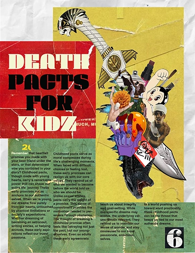

Designer,Editor and Artist

I'm a first-generation Latino American designer specializing in thoughtful design and experience-driven solutions. I bring ideas to life through strategy, creativity, and execution. More than a designer, I'm a tastemaker.
Why use me as your Designer?
You should use me as a designer because I bring creativity, attention to detail, and a clear understanding of how design communicates a message. I focus on creating visuals that are not only aesthetically pleasing but also meaningful and effective for the target audience. I listen carefully to client needs, adapt my style when needed, and stay committed to delivering high-quality work on time. My goal is to help brands stand out, connect with their audience, and present themselves in a professional and memorable way through strong, thoughtful design.
what I can bring to your company
I can bring creativity, reliability, and a strong design mindset to your company. As a graphic designer, I contribute fresh ideas, strong visual communication skills, and attention to detail that helps elevate brand identity and marketing materials. I work well with teams, take feedback positively, and stay focused on meeting goals and deadlines. I;m motivated to grow, learn, and adapt, and I'm committed to producing designs that support the company's vision and create a positive impact.
My Skills
fluent with the following programs
- Adobe Photoshop
- Adobe Illustrator
- Adobe InDesign
- Adobe After Effects
- Adobe Premiere Pro
- Adobe Lightroom
My skills go beyond digital design, with a strong eye for classic and physical art as well. I have experience in typography, packaging, experience-based design, and videography, allowing me to create cohesive and engaging visual solutions across different mediums.
- Branding
- Creating a unique identity for a product or company
- Typography
- the style and appearance of printed or online material.
Common questions I get asked
- How do you manage deadlines?
- Can you adapt your style to different brands?
- Can you show examples of your work?